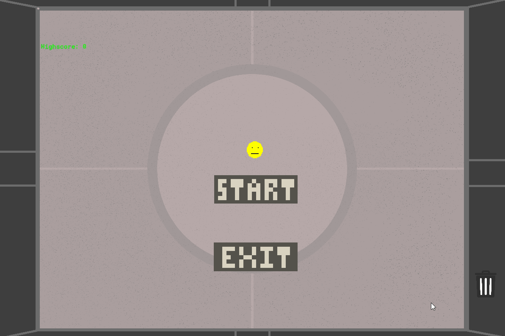

CircleGuy

A small 5 wave survival horde game written in GameMaker Studio's language, GML. Enemies spawn around the small yellow circle you play as and will progressively get more difficult as the waves go on.
Try the game out!A small 5 wave survival horde game written in GameMaker Studio's language, GML. Enemies spawn around the small yellow circle you play as and will progressively get more difficult as the waves go on.
Try the game out!Or email me at: jontheruiz4@gmail.com